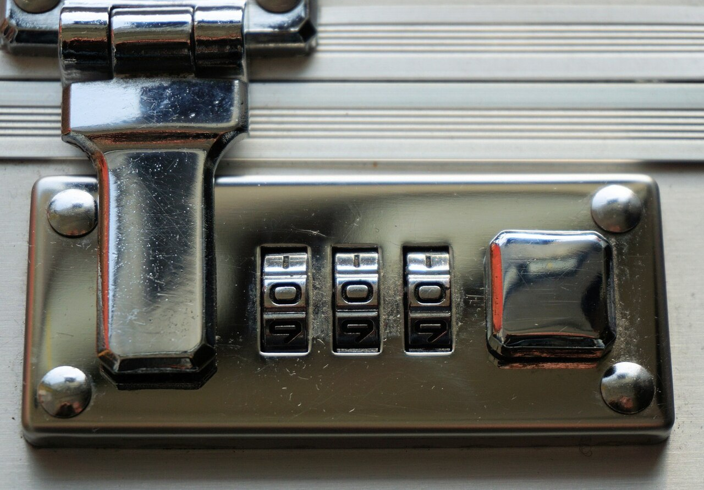

Đóng gói hành lý đi du lịch gọn nhẹ: 5 cách xếp đồ không nhăn, không thừa
Đóng gói hành lý đi du lịch gọn nhẹ: 5 cách xếp đồ không nhăn, không thừa: đóng gói hành lý gọn nhẹ là mang đủ đồ dùng trong số ngày đi, xếp sao cho quần áo ít nhăn và lấy đồ nhanh. 5 cách sau làm được việc đó: lên danh sách trước khi mở vali, cuộn quần áo thay cho gấp, xếp đồ nặng dưới và đồ nhẹ lên trên, để giấy tờ cùng đồ quan trọng vào túi riêng dễ lấy, kiểm tra lại một lượt rồi mới khóa vali.
Mở vali ở khách sạn, áo sơ mi nhăn nhúm, sạc điện thoại nằm dưới đáy, còn đôi giày mang theo thì cả chuyến không dùng tới một lần — vali nặng mà đồ cần lại khó lấy. Phần lớn rắc rối khi đi du lịch bắt đầu từ lúc xếp đồ ở nhà, và 5 cách sau xử lý đúng những rắc rối đó.
Cảnh báo an toàn trước khi làm gì
Vali quá nặng dễ làm đau lưng, trật tay khi xách lên xe hay lên cầu thang — chia đồ sang hai túi nếu đi dài ngày. Dao, kéo, vật sắc nhọn và đồ dễ vỡ để trong hành lý ký gửi, không để trong túi xách tay mang lên máy bay. Pin sạc dự phòng để trong hành lý xách tay, không để trong hành lý ký gửi — chất lỏng dễ cháy và vật sắc nhọn thì làm theo đúng quy định của hãng bay. Thuốc men cần dùng hằng ngày để trong túi xách tay, kèm đơn thuốc nếu có. Vali khóa số thì nhớ mã số trước khi đi.
1. Lên danh sách trước khi mở vali
Viết danh sách ra giấy hay điện thoại trước khi mở vali: số ngày đi, thời tiết nơi đến, việc cần làm trong chuyến đi — rồi ghi món đồ theo từng ngày. Mỗi ngày một bộ quần áo, thêm một bộ dự phòng cho cả chuyến là đủ cho chuyến đi ngắn; đồ mặc lại được như áo khoác, quần dài thì mang một chiếc cho nhiều ngày. Bỏ khỏi danh sách món đồ mang theo chỉ vì 'biết đâu cần tới' — món nào chưa chắc dùng tới thì để ở nhà. Xếp đồ theo danh sách, món nào không có trong danh sách thì không cho vào vali.
2. Cuộn quần áo thay cho gấp
Áo thun, quần vải mềm, đồ ngủ và đồ lót cuộn tròn lại thay cho gấp phẳng: cuộn chặt tay, xếp các cuộn sát nhau như xếp ống — vừa tiết kiệm chỗ, vừa ít nếp nhăn hơn gấp phẳng nhiều lớp. Áo sơ mi, quần tây và váy dễ nhăn thì gấp phẳng, đặt lên trên cùng, kẹp giữa hai lớp quần áo mềm để giữ phẳng. Giày bọc trong túi vải hay túi nilon riêng rồi mới đặt vào vali — đế giày bẩn làm bẩn quần áo xung quanh. Tất và đồ lót cuộn nhỏ, nhét vào khoảng trống trong giày hay góc vali cho đỡ phí chỗ.
3. Xếp nặng dưới, nhẹ và dễ nhăn lên trên
Đồ nặng đặt sát đáy vali, phía gần bánh xe: giày, túi đồ vệ sinh, sách — vali kéo đi cân bằng, không bị lật khi dựng đứng. Quần áo đã cuộn xếp ở lớp giữa, lấp đầy khoảng trống cho vali chắc, đồ không xô lệch khi di chuyển. Đồ dễ nhăn và đồ cần dùng ngay khi tới nơi đặt lên trên cùng: áo sơ mi, áo khoác mỏng, đồ ngủ cho đêm đầu tiên. Đồ dễ vỡ bọc trong quần áo mềm, đặt giữa vali, không đặt sát thành vali.
4. Giấy tờ và đồ quan trọng để túi riêng, dễ lấy
Hộ chiếu, căn cước, vé xe, vé máy bay, tiền mặt và thẻ để chung một túi nhỏ đeo trước ngực hay túi ngoài của balo xách tay — tới cửa kiểm tra chỉ cần mở túi là lấy ra được, không phải mở vali giữa sân bay. Thuốc uống hằng ngày, sạc điện thoại, tai nghe và một bộ quần áo thay cho đêm đầu cũng để trong túi xách tay — vali ký gửi tới chậm hay thất lạc thì vẫn có đồ dùng ngay. Chụp ảnh hộ chiếu, vé và mã đặt phòng lưu trong điện thoại, kèm bản in để riêng một túi khác — mất bản chính vẫn còn bản sao để đối chiếu.
5. Kiểm tra lại rồi khóa vali
Đóng vali lại, kéo khóa thử một lượt xem khóa có trơn không, bánh xe có quay đều không — khóa kéo kẹt hay bánh xe kẹt thì sửa ở nhà vẫn dễ hơn sửa ở sân bay. Cân thử vali bằng cân hành lý hay cân người: đứng lên cân cùng vali rồi trừ cân nặng của mình — quá số cân hãng bay cho phép thì bỏ bớt đồ nặng ra, chuyển sang túi xách tay nếu còn chỗ. Khóa vali bằng khóa số, ghi lại mã số vào điện thoại. Chụp một tấm ảnh đồ trong vali trước khi đóng nắp — vali thất lạc thì có ảnh để mô tả đồ đạc với nhân viên sân bay. Mỗi hãng bay có giới hạn cân nặng và kích thước hành lý riêng — xem kỹ vé và quy định của hãng trước ngày đi, vì phí quá cân tại sân bay thường cao.

Kết lại: lần tới đi du lịch, cứ làm theo thứ tự: viết danh sách, cuộn quần áo, xếp nặng dưới nhẹ trên, để giấy tờ riêng, kiểm tra lại rồi khóa vali — vali nhẹ, đồ ít nhăn, tới nơi mở vali ra là dùng được ngay.
- Muốn bài viết có thêm người hỏi mua? Xem các gói tăng tương tác tại viettuongtac.com.
- Cần một website bán hàng để khách xem mẫu và đặt hàng dễ hơn? Xem mẫu tại webkhoinguon.com.

💬 Bình luận
Đang tải bình luận…